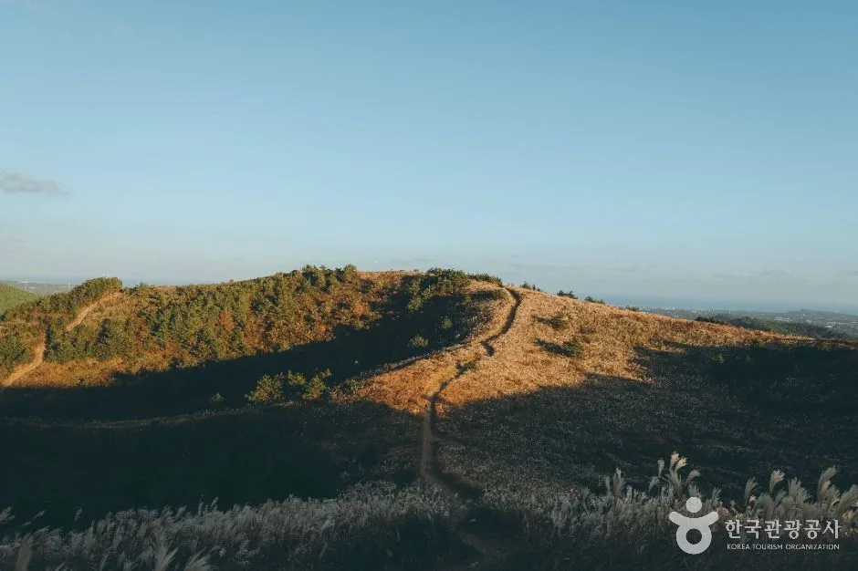
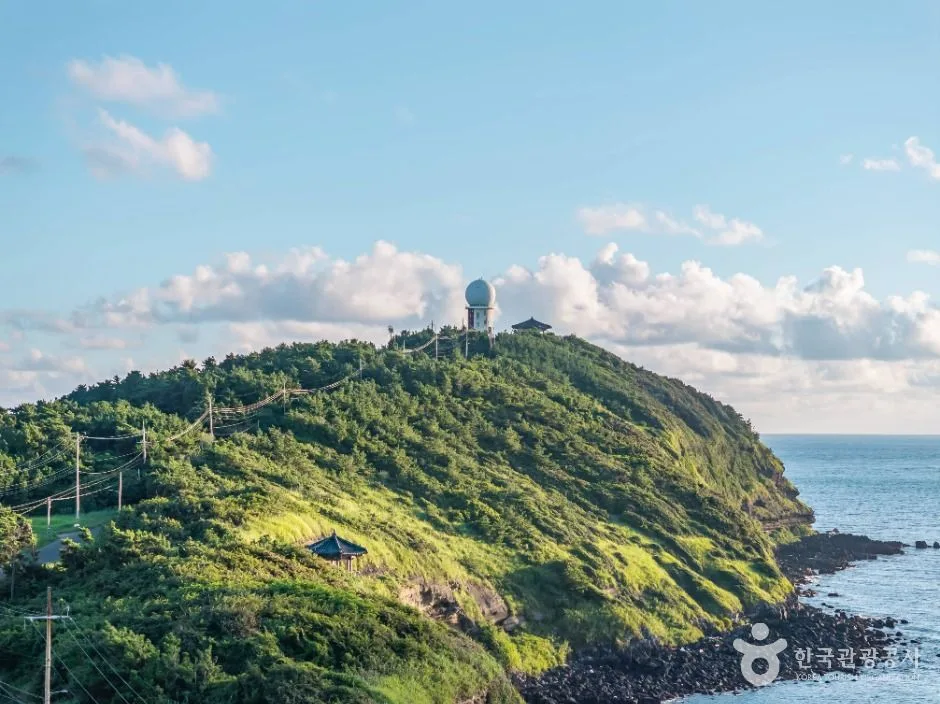
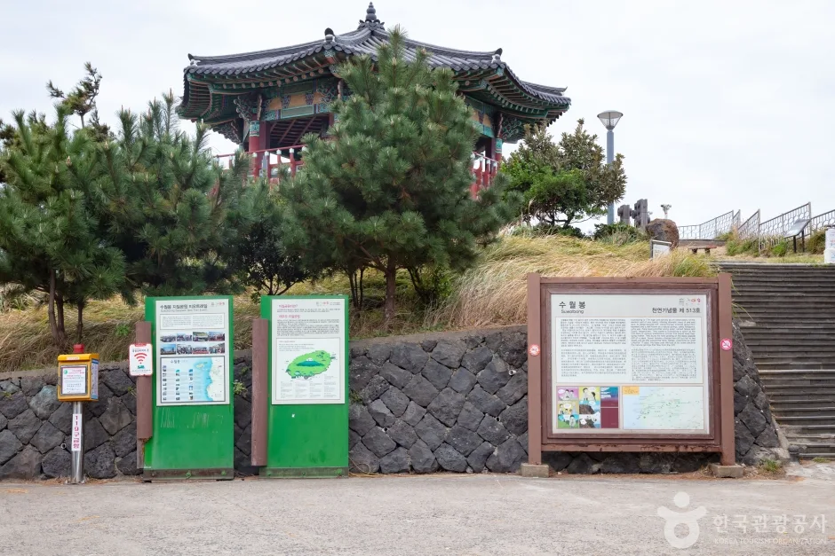
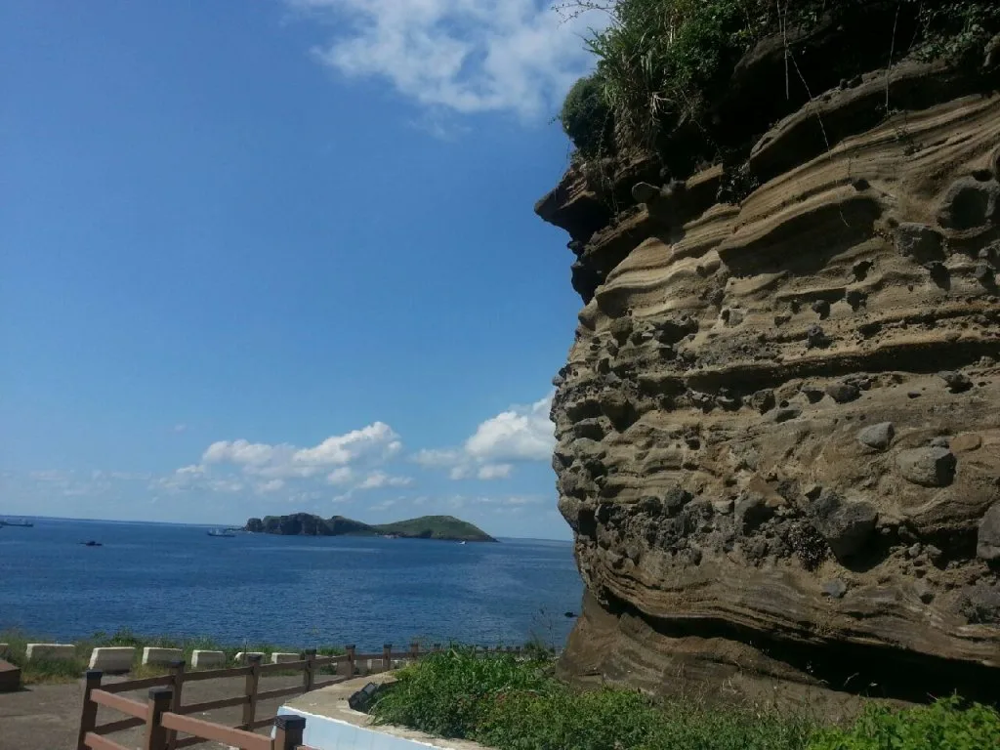
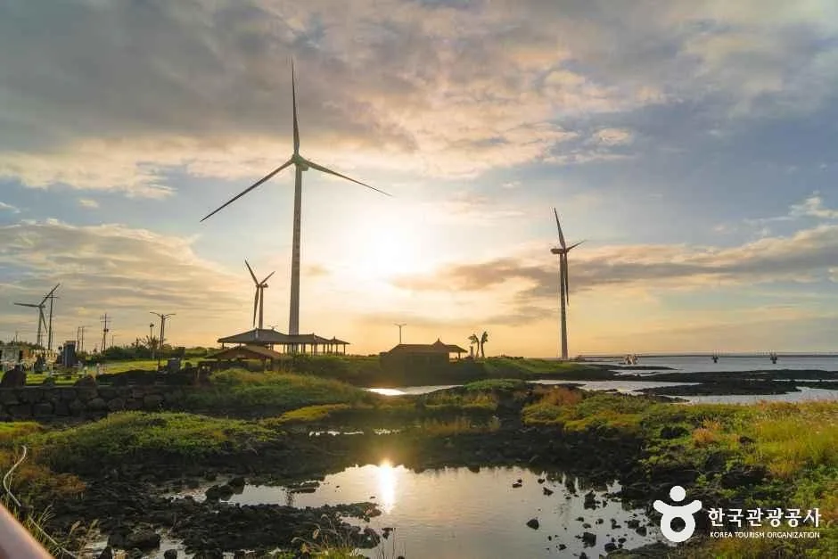
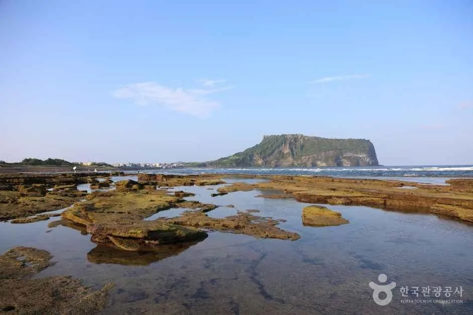
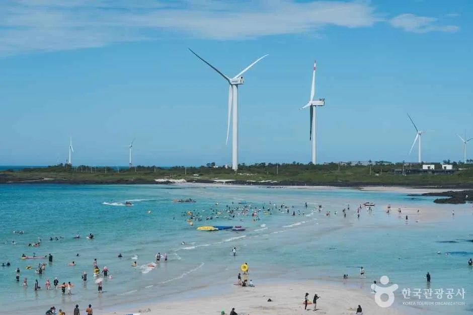
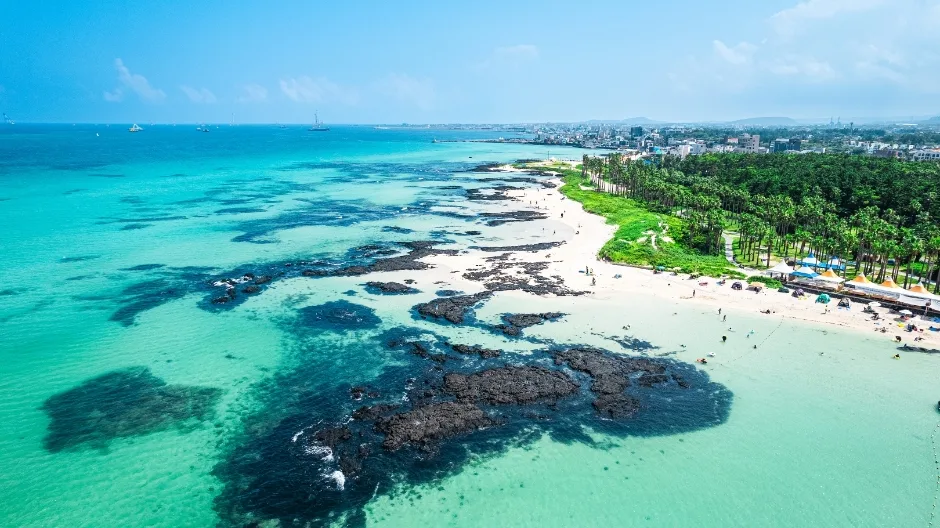

▲ 가을이면 제주 오름마다 억새가 황금빛으로 물든다. 사진은 서귀포 따라비오름의 억새 능선 사진=한국관광공사
1. 제주 차박, 왜 요즘 더 조심해야 할까
제주에서 차박은 예전만큼 자유롭지 않다. 해수욕장법(해수욕장의 이용 및 관리에 관한 법률)은 2023년 6월 개정 시행령을 통해 누구든 해수욕장에 야영용품이나 취사용품을 무단으로 설치·방치해 이용객을 방해하면 안 된다고 못 박았고, 실제로 2023년 6월 30일 제주시는 협재·금능해수욕장 내 야영장에 장기간 방치돼 있던 이른바 '알박기 텐트' 35개(협재 20동, 금능 15동)를 별도 행정대집행 절차 없이 즉시 철거했다. 여기에 더해 2024년 9월 10일부터는 국토교통부 주차장법 시행령·시행규칙 개정에 따라 전국 공영주차장 내 야영·취사·화기 사용이 금지되면서, 위반 시 1차 30만 원, 2차 40만 원, 3차 50만 원의 과태료가 단계적으로 부과된다. 이는 제주만의 조례가 아니라 전국 공영주차장에 공통 적용되는 규정이라, 제주에서도 예외 없이 단속 대상이 된다. 즉 '주차장에 차를 세우고 잠만 자는 것'과 '텐트·버너를 꺼내 야영하는 것'은 완전히 다른 문제이며, 후자는 제주 어디서든 사실상 불법이라고 보면 된다.
📍 핵심 구분
· 차량 내 취침만: 지자체·장소별로 판단이 갈리는 회색지대
· 텐트·타프·버너 등 야영장비 사용: 해수욕장·공영주차장 모두 명백한 위반
· 공식 야영장 이용: 요금을 내더라도 법적으로 가장 안전한 선택
2. 수월봉 — 한국 9대 일몰 명소이자 지질공원 절벽
수월봉은 제주시 한경면 고산리 3760 일대, 해발 77m의 야트막한 오름이다. 약 1만8000년 전 마그마가 바닷물을 만나 폭발하며 쌓인 화산쇄설층이 해안 절벽 '엉알'을 이루고 있어 유네스코 세계지질공원으로 지정됐다. "해는 성산일출봉에서 가장 먼저 뜨고, 수월봉에서 가장 늦게 진다"는 말이 있을 만큼 저녁 노을이 억새밭을 금빛으로 물들이는 것으로 유명하다. 정상 바로 아래 무료 주차장이 있고, 자구내포구 주차장에서 시작하는 지질트레일을 따라 엉알해안까지 걸을 수 있다. 지질트레일 코스 안내는 비짓제주 공식 홈페이지에서 확인 가능하다.

▲ 하늘에서 본 수월봉. 정상 부근 레이더 시설 아래로 지질트레일과 해안 절벽이 이어진다 사진=한국관광공사
다만 여기도 완전한 '합법 차박지'는 아니다. 정상 주차장은 제주시가 관리하는 공영주차장에 해당해, 텐트를 치거나 버너로 취사하면 앞서 설명한 과태료 대상이 될 수 있다. 차량 내에서 잠만 자는 수준이라면 상대적으로 단속 빈도가 낮은 편이지만, 명확히 허용된 것은 아니므로 현지 안내판과 관리사무소 공지를 확인하는 편이 안전하다.

▲ 수월봉 주차장 입구의 안내판. 뒤로 억새가 자란 언덕과 정상의 육각정이 보인다 사진=한국관광공사
수월봉의 절벽 '엉알'이 특별한 이유는 단순한 풍경 이상의 지질학적 가치 때문이다. 약 1만8000년 전 뜨거운 마그마가 차가운 바닷물과 만나 격렬하게 반응하며 잘게 부서진 화산재를 사방으로 흩뿌렸고, 이 화산재가 겹겹이 쌓여 지금의 절벽 단면에 뚜렷한 줄무늬 층리를 남겼다. 이런 방식으로 형성된 화산체를 '응회환'이라 부르며, 성산일출봉·송악산 등도 같은 원리로 만들어졌다. 특히 수월봉 절벽은 화쇄난류(화산재가 빠른 속도로 지표를 타고 흐르는 현상)의 퇴적 구조가 세계적으로도 손꼽힐 만큼 선명하게 남아 있어, 2010년 유네스코 세계지질공원 인증과 별개로 2009년 국가지정 천연기념물 제513호로도 지정됐다.

▲ 엉알 절벽 단면에 켜켜이 쌓인 화산재 층리. 화쇄난류 퇴적 구조가 세계적으로도 학술 가치가 크다 사진=Jjw, Wikimedia Commons (CC BY-SA 4.0)
가을이 되면 이 지질명소들은 억새와도 자연스럽게 이어진다. 수월봉을 포함해 제주 서부 오름 능선은 화산재가 쌓여 만든 비옥한 토양 위에 억새가 넓게 자리 잡았고, 9~11월 사이 은빛 물결을 이루며 절벽·바다와 함께 어우러지는 풍경으로 사진 애호가들 사이에서 특히 인기가 높다. 다만 최근 제주시는 협재·금능 사례 이후 성수기·연휴 기간을 중심으로 해안 명소 일대 순찰을 강화하는 추세이므로, 억새·일몰 사진을 찍으러 늦은 시간까지 머무를 계획이라면 차량 내 취침 여부와 관계없이 현장 안내판을 먼저 확인하는 편이 안전하다.
3. 신창풍차해안(싱계물공원) — 풍력발전기와 일몰이 만드는 이국적 풍경
신창풍차해안은 제주시 한경면 한경해안로 일대, 해상풍력발전기가 늘어선 해안도로다. 도로 중간의 싱계물공원 주차장(한경면 신창리 1322-1)은 무료로 개방돼 있고, 화장실과 수도, 정자 등 쉴 공간이 갖춰져 있다. 하얀 풍차와 에메랄드빛 바다가 어우러진 해질 무렵 풍경이 특히 유명해, 수월봉에서 차로 10분 내외 거리에 있는 만큼 두 곳을 묶어 서부 해안 드라이브 코스로 삼기 좋다.

▲ 신창풍차해안 싱계물공원의 노을. 풍력발전기 사이로 해가 지는 모습이 이국적이다 사진=한국관광공사
이곳 역시 지자체가 관리하는 공영주차장·공원 시설이라는 점에서 수월봉과 같은 조건이 적용된다. 화장실·수도가 있어 하룻밤 머물기엔 여러모로 편리하지만, 텐트나 취사도구를 펼치는 순간 단속 대상이 된다는 점은 동일하다.
4. 광치기해변 — 성산일출봉 조망 명소, 그러나 가장 위험한 선택
광치기해변은 서귀포시 성산읍, 성산일출봉과 섭지코지 사이에 위치한다. 용암이 바닷물과 만나 굳으며 만들어진 이끼 낀 암반 지형이 썰물 때 넓게 드러나고, 그 너머로 성산일출봉이 그대로 조망돼 제주 올레길 1코스의 종점이자 2코스의 시작점으로도 잘 알려져 있다. 인지도가 높은 만큼 해변 인근 공영주차장은 차박 차량으로 밤마다 붐비는 것으로 유명한 곳이기도 하다.

▲ 광치기해변의 암반 지형과 그 너머로 보이는 성산일출봉 사진=한국관광공사
그러나 인기와 합법성은 별개다. 광치기해변은 해수욕장법이 적용되는 정식 해수욕장이고, 인접 주차장도 전국 공영주차장에 적용되는 주차장법 시행령상 야영·취사 금지 대상이다. '다들 하니까 괜찮겠지'라는 생각으로 텐트나 타프를 펼치면 과태료 1차 30만 원부터 시작하는 단속 대상이 될 수 있다. 차량 내 취침만 한다 해도 성수기·연휴 기간에는 순찰이 강화되는 경향이 있어, 5곳 중 가장 리스크가 큰 선택지로 봐야 한다.
5. 김녕해수욕장 야영장 — 5곳 중 유일하게 완전히 합법인 곳
제주시 구좌읍 해맞이해안로 7-6, 김녕해수욕장 바로 옆에 붙은 공식 야영장이다. 잔디 사이트에 전기·화장실·샤워실·취사장까지 갖춰, 흔히 '제주 로컬캠핑의 메카'로 불릴 만큼 현지 캠퍼들이 즐겨 찾는다. 성수기(7~8월)에는 소형 5,000원·중형 1만 원·대형 2만 원 수준의 이용료가 붙지만, 비성수기에는 무료로 이용할 수 있는 경우가 많다(정확한 요금은 시기별로 다를 수 있어 방문 전 관리사무소 확인이 필요하다). 무엇보다 정식으로 지정·운영되는 야영장이기 때문에, 텐트를 치든 차박을 하든 법적으로 문제될 소지가 없다.

▲ 김녕해수욕장. 바로 옆 야영장은 전기·화장실·샤워실·취사장을 갖춘 공식 캠핑장이다 사진=한국관광공사
해수욕장 산책로를 따라 걸으면 풍력발전기가 늘어선 풍경과 코발트빛 바다를 함께 볼 수 있고, 인근에 만장굴·용천동굴 등 지질트레일 코스도 이어져 있어 하루 코스로 묶기도 좋다.
6. 협재·금능해수욕장 — 이미 단속당한 전례가 있는 곳
협재해수욕장은 제주시 한림읍, 한림공원 인근에 위치한 해변으로 흰 모래사장과 비양도 전망, 완만한 경사로 가족 단위 방문객이 많은 곳이다. 탈의실·샤워실·화장실 등 해변 자체 편의시설은 잘 갖춰져 있지만, 앞서 언급했듯 2023년 제주시가 협재·인접한 금능해수욕장에 방치된 텐트 35개를 즉시 철거한 전력이 있는 곳이다. 신설된 해수욕장법 제23조의2 시행 이후 첫 집행 사례로 꼽히는 만큼, 이 일대는 야영·취사에 대한 단속 의지가 뚜렷하다고 봐야 한다.

▲ 하늘에서 본 협재해수욕장. 풍경은 좋지만 무단 야영·취사용품 방치는 즉시 철거 대상이다 사진=한국관광공사
협재·금능 일대에서 하룻밤을 보내고 싶다면 차로 20분 거리인 김녕해수욕장 야영장처럼 정식 야영장을 이용하거나, 인근의 유료 사설 캠핑장을 알아보는 편이 안전하다. 낮 시간 방문이나 일몰 감상용으로는 여전히 손꼽히는 명소다.
7. 한눈에 비교하기
다섯 곳의 위치·합법성·편의시설·주의사항을 표로 정리하면 다음과 같다.
| 장소 | 위치 | 차박 허용 여부 | 편의시설 | 주의사항 |
|---|---|---|---|---|
| 수월봉 | 제주시 한경면 고산리 | 회색지대(차량 내 취침만, 텐트·취사 불가) | 무료 주차장, 지질트레일 안내센터 | 주차장법 시행령(야영·취사 금지) 적용, 강풍 주의 |
| 신창풍차해안(싱계물공원) | 제주시 한경면 신창리 | 회색지대(차량 내 취침만) | 무료 주차장, 화장실, 수도, 정자 | 주차장법 시행령(야영·취사 금지) 적용 |
| 광치기해변 | 서귀포시 성산읍 | 사실상 불법(단속 위험 큼) | 주차장, 인근 식당가 | 해수욕장법 + 주차장법 시행령 이중 적용, 성수기 순찰 강화 |
| 김녕해수욕장 야영장 | 제주시 구좌읍 김녕리 | 완전 합법(정식 야영장) | 전기·화장실·샤워실·취사장 | 성수기 이용료 발생(소형 5천원~) |
| 협재·금능해수욕장 | 제주시 한림읍 | 불법(2023년 텐트 강제철거 전례) | 탈의실·샤워실·화장실 | 야영용품 방치 즉시 단속 대상 |
✅ 출발 전 확인할 것
· 어디서든 텐트·타프·버너 등 야영장비는 사용하지 말 것
· 정말 하룻밤 자고 싶다면 김녕해수욕장 야영장 등 정식 시설 우선 고려
· 공영주차장 야영·취사 금지 규정(주차장법 시행령) 위반 시 1차 30만 원부터 과태료
· 방문 전 각 지자체·관리사무소 최신 공지 확인이 가장 확실하다